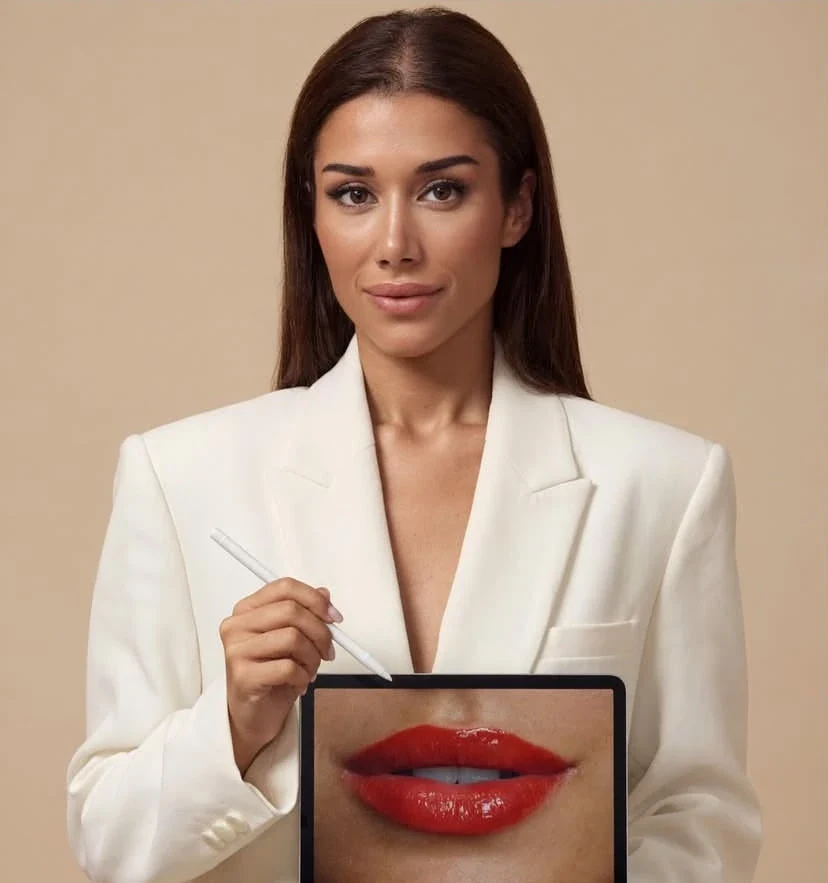

TA
Uygulama hakkında bilgi alın.
GÖRÜŞMEDE KONUŞALIM
BY TUĞÇE AKMAN
Her detayda size özel dokunuşlar. İhtiyaçlarınızı birlikte değerlendirelim, size en uygun uygulamayı keşfedelim.
Uygulama kapsamını ve size uygun seçenekleri birlikte konuşalım.

01 / UYGULAMALAR
İşlemleri tanıyın, çalışmalarımızı inceleyin.
Sorularınızı ön görüşmeye taşıyın.
Uygulama hakkında bilgi alın.
02 / SEÇİLMİŞ ÇALIŞMALAR
Farklı uygulamalara yakından bakın.
Beğendiğiniz örneği görüşmede paylaşın.
Bu kategori için uygulama bilgilerini inceleyebilir veya bize danışabilirsiniz.
Instagram’da daha fazla çalışma ↗03 / BİRLİKTE KARAR VERELİM
Güzellik yolculuğunuz, nasıl bir görünüm istediğinizi konuşarak başlar. BY TUĞÇE AKMAN’da çalışmalarınızı ve sorularınızı bir ön görüşmeye taşıyabilir; uygulama kapsamını, bakım planını ve ücreti karar vermeden önce öğrenebilirsiniz.
RANDEVU TALEBİNİZ
Hizmetinizi ve zaman tercihinizi seçin; mesajınızı WhatsApp üzerinden işletmeye gönderin. Kesin randevu işletmenin onayıyla oluşur.
90533897213704 / SORU & CEVAP
İşlemler ve bakım üzerine kısa sohbetler.
Videolar yalnızca oynatmayı seçtiğinizde Instagram’dan yüklenir.
AKLINIZDA KALMASIN.
Önce beklentiniz, uygulama kapsamı ve sorularınız konuşulur. Uygulama kararı kişisel değerlendirme ve karşılıklı onayla verilir.
Randevu alanında “Mevcut danışanım” seçeneğini işaretleyerek talebinizi WhatsApp üzerinden iletebilirsiniz. Kesin saat işletme tarafından onaylanır.
Uygulamayı seçip fiyat ve kapsam bilgisi talebi hazırlayabilirsiniz. Güncel ücret ve süreyi işletmeyle teyit edin.
05 / İLETİŞİM
Randevu formu yalnızca WhatsApp mesaj taslağı hazırlar; bilgiler sunucuya kaydedilmez. Gönderdiğiniz mesaj WhatsApp ve işletme tarafından işlenir. Sağlık bilgisi veya hassas kişisel bilgi paylaşmayın. Instagram videoları siz oynatmayı seçene kadar yüklenmez. Bu müşteri sayfasında analiz veya pazarlama çerezi kullanılmaz. Yönetim girişi için oturum çerezleri gereklidir. Veri işleme ve haklarınıza ilişkin ayrıntıları işletmeden isteyebilirsiniz.